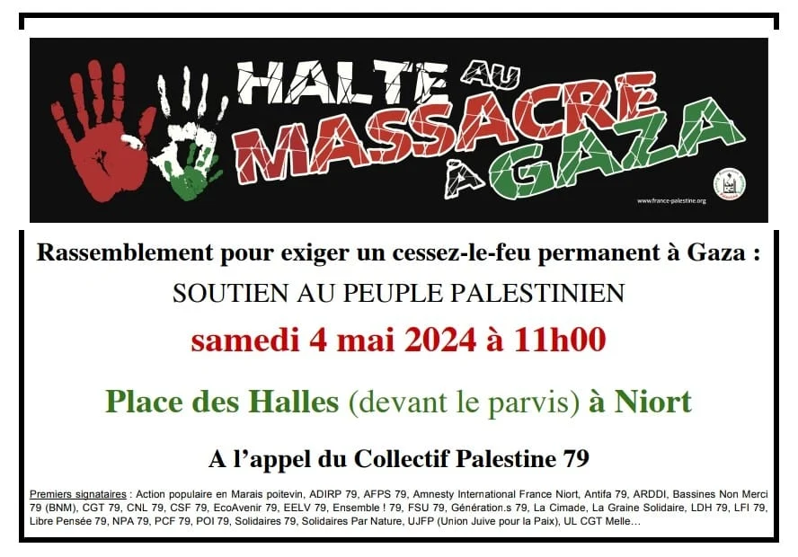

Appel relayé
À Niort, rassemblement pour Gaza annoncé le 4 mai
Date indiquée par Facebook · 3 mai 2024
Repères éditoriaux
Le Collectif Palestine 79 appelait à se retrouver samedi 4 mai à 11 h, place des Halles, pour un cessez-le-feu permanent.
Texte conservé avec la publication
#DeuxSèvres
#niort
#Gaza

Sources
Archive rouge · export Facebook · AR-0002-FB-01403
À lire aussi · À Niort, le rassemblement du 25 octobre pour la paix en vidéo · Le lien d’origine